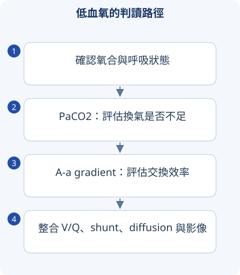

判讀圖解

詳讀 01呼吸生理：低血氧先找機轉
PaO2 是血中溶解氧分壓，SaO2 是血紅素飽和度，CaO2 是總含氧量。CaO2 約為 1.34 × Hb × SaO2 ＋ 0.003 × PaO2，所以嚴重貧血即使 SpO2 正常也可能氧輸送不足；CO poisoning 的一般 pulse oximetry 亦可能誤導，需 co-oximetry。
低氧機轉包括低吸入氧、肺泡低通氣、V/Q mismatch、diffusion impairment、shunt。前兩者常有較正常 A–a gradient；後三者使 A–a 增加。Shunt 對單純增加 FiO2 的改善較差，但實際病人可能同時有多種機轉。
海平面、室內空氣可估 PAO2 ≈150－PaCO2/0.8，A–a＝PAO2－PaO2；年齡、FiO2 與氣壓不同不能照搬常數。PaCO2 與肺泡通氣呈反比，呼吸次數增加不代表有效肺泡通氣一定增加。
詳讀 02肺功能：阻塞、限制與 DLCO
| 結果 | 如何解讀 | 常見病因 |
|---|---|---|
| FEV1/FVC 降低 | 阻塞性通氣障礙 | 氣喘、COPD、支氣管擴張等 |
| FVC 降低但比值正常／高 | 可能限制、氣體滯留或努力不佳 | 需 TLC 降低才能確認限制，不能只看 FVC |
| TLC 降低、DLCO 降低 | 考肺實質限制 | ILD 等 |
| TLC 降低、DLCO 相對保留 | 考肺外限制 | 胸壁、肥胖、神經肌肉疾病 |
| 阻塞合併 DLCO 低 | 支援氣腫等肺泡／血管床損失 | 與常有正常或高 DLCO 的氣喘區分 |
寬表格可左右捲動
DLCO 受 Hb、吸菸、肺血管病與肺泡出血影響；低 DLCO 不是 ILD 專屬。Bronchodilator response 支援可變性氣流受限，但陰性一次不能排除氣喘，陽性也不直接排除 COPD。
詳讀 03氣喘：診斷、控制與嚴重度
氣喘是慢性氣道炎症合併可變性症狀與呼氣氣流受限。反覆 wheeze、喘、胸悶、咳嗽，夜間／清晨或運動、過敏原誘發是典型；cough-variant asthma 可沒有典型喘鳴。
成人常用 bronchodilator 後 FEV1 增加 >12% 且 >200 mL 作為可變性證據之一；其他肺功能規範可能採不同表達法，要看題目版本。PEF 日間變異、支氣管激發或治療反應亦可支援；檢查需在合適時間並排除誘導性喉阻塞等替代診斷。
長期控制如何安排
控制包含日間症狀、夜間醒來、緩解藥需求與活動限制；未來風險則含過去急性惡化、肺功能與吸菸等。嚴重度是達到控制所需治療程度，不能只按一次急性發作症狀分級。
成人／青少年治療需含 ICS，不能把 SABA-only 當安全的長期常規。ICS-formoterol 可於適合方案作為抗炎緩解藥；MART 是同一含 ICS-formoterol 製劑兼維持與緩解，不是所有 ICS/LABA 都能拿來急救。加強治療前先查吸入技巧、服藥規律、暴露與共病；控制穩定後才考慮降階。
急性惡化如何辨識危險
說話困難、輔助肌使用、PEF 明顯低、疲倦、意識變化、silent chest 都是嚴重訊號。急性氣喘早期常低 PaCO2；PaCO2 回到正常或升高配合惡化可能代表疲乏。處置包含反覆吸入短效支氣管擴張、必要時 ipratropium、全身類固醇與氧療；特定重症可用 IV magnesium，並及時評估呼吸支援。
詳讀 04COPD：診斷、症狀與治療分開看
COPD 需症狀／暴露背景加上 post-bronchodilator FEV1/FVC <0.70 的持續阻塞；固定比值可能對老年高估、年輕低估，borderline 結果需適當重測與整合。慢性支氣管炎為連續兩年、每年至少三個月咳痰的傳統定義；氣腫為肺泡結構破壞，兩者不能直接當肺功能分期。
FEV1 的 GOLD 1–4 是氣流阻塞程度；症狀和急性惡化史是另一個治療維度。長效支氣管擴張 LABA／LAMA 是核心；ICS 依急性惡化、eosinophil、合併氣喘及肺炎風險評估，不是所有 COPD 首選單用 ICS。戒菸、疫苗、肺復健與吸入技巧必須和用藥一起讀。
COPD 急性惡化與長期氧療
急性惡化需排除肺炎、心衰竭與 PE；支氣管擴張、短程全身類固醇，抗生素依痰膿性、症狀與通氣需求等決定。易高碳酸血癥者氧療常以 SpO2 88–92% 為初始範圍並驗血氣；不能因怕 CO2 就完全不給氧。
長期氧療經典適應症是穩定狀態嚴重低氧：PaO2 ≤55 mmHg 或 SaO2 ≤88%，或 PaO2 約 55–60 合併肺高壓、周邊水腫或 erythrocytosis 等；急性感染時的單次低氧不能直接等於永久適應症。
為何氣喘發作病人原本 PaCO2 28，後來 40，卻更喘更疲倦？
原先過度通氣造成低 CO2；在臨床惡化時 CO2 正常化可能表示有效通氣下降與呼吸肌疲乏，不能解讀成「血氣恢復正常」。
比較錶速覽
讀完上方詳解後，用以下表格複習診斷差異與治療重點。
速覽｜1｜呼吸困難與肺功能
氣道、肺泡／間質、血管、心臟與呼吸肌都可能造成喘。
| 檢查 | 判讀 | 鑑別線索 |
|---|---|---|
| FEV1／FVC | 降低支援 airflow obstruction | 氣喘、COPD；需結合標準與病史。 |
| FVC 低、ratio 保留 | 可能 restriction，也可能 air trapping／努力不足 | 真 restriction 需 TLC 降低確認。 |
| DLCO 低 | 換氣介面／血管問題或貧血 | emphysema、ILD、肺血管病等。 |
| DLCO 正常／高 | 不是典型破壞性肺泡病變 | 氣喘可正常／高；肺泡出血可升高。 |
| Flow-volume loop | 吸氣／吐氣平坦的分佈 | 可協助判斷上氣道阻塞；需整體核對。 |
寬表格可左右捲動
FEV1 下降程度與 airflow obstruction 的診斷不是同一件事。
速覽｜2｜低血氧：先看是否換氣不足
A-a gradient = PAO2−PaO2；受吸入氧氣、氣壓及年齡影響。
| 機轉 | A-a gradient | 特性 |
|---|---|---|
| 低吸入氧／單純 hypoventilation | 常正常 | PaCO2 上升時考慮中樞／呼吸肌／胸壁。 |
| V/Q mismatch | 升高 | 多數可對補氧有反應。 |
| Diffusion impairment | 升高 | ILD 等情境，運動時更明顯。 |
| Right-to-left shunt | 升高 | 補氧反應相對差。 |
寬表格可左右捲動
SpO2 正常不能排除 CO poisoning；嚴重貧血時氧含量低而 PaO2 可正常。
速覽｜3｜氣喘與 COPD 比較
先證實可變或持續的 airflow limitation，再評估控制、惡化與吸入技術。
| 面向 | 氣喘 | COPD |
|---|---|---|
| 病程 | 症狀與氣流變動較大 | 常與菸害／其他暴露及持續症狀有關。 |
| 診斷 | 可變 expiratory airflow limitation | 適當情境下 post-bronchodilator FEV1／FVC <0.7。 |
| 長期治療核心 | ICS-containing therapy | 長效支氣管擴張；ICS 依惡化、eosinophils／共病等選擇。 |
| 急性惡化 | 評估喘、PEF、血氧、疲勞與 silent chest | 也需排肺炎、HF、PE；依情境補氧、藥物與 NIV。 |
| 追蹤 | 控制與惡化風險，不只症狀 | 症狀與 exacerbation history，不只 FEV1。 |
寬表格可左右捲動
ICS／LABA 品項不能互當 reliever；LABA 單方不適合氣喘。
情境練習
氣喘症狀很少，是否可直接只保留 SABA 作長期策略？
指引與公告補充
以下補充已依列出的版本核對；與 2020 年參考書的學習整理分開標示。
成人／青少年採 ICS-containing therapy；Track 1 以低劑量 ICS-formoterol 作 reliever 為優先策略。書中「僅用 SABA」不可直接當現行長期策略。 查閱來源
COPD 診斷需要支氣管擴張後 FEV1／FVC <0.7；並整合相符的症狀與暴露。 查閱來源
來源與版本
書籍學習來源：《國考分科詳解—醫學（三）》2020 年版，第 1 冊〈心內・胸內〉；本頁對應章節導讀位置為 PDF 第 229–280 頁（含封面，與書內印刷頁碼不同）。
依章節重寫比較與判讀重點；指引補充另列版本。圖解與情境練習為本站原創。核對日：2026/09/30。
詳細補充的來源範圍
上方「詳讀」為依原參考書主題架構重寫的基礎、臨床判讀與國考複習說明；原表格保留於速覽區。數值適用條件及舊題版本差異寫於對應小節；本頁未逐題收錄所有歷屆試題。
本輪擴充：2026/10/05。指引連結支援各自的更新主題；基礎病生理、藥物機轉與鑑別依書籍架構整理。